把“说不清的体验” 拆成可测量、可验收的设计Turning “it just feels off” into measurable, verifiable design
我把复杂、模糊的人机问题，转化为可理解、可验证、可纠正的体验系统。I turn ambiguous human-machine problems into experiences that can be understood, tested, and corrected.
人因研究Human factors research
产品策略Product strategy
交互设计Interaction design
原型构建Prototyping
体验量化Experience measurement
精选项目Selected work
我做过的产品、研究和小工具Products, research, and tools I’ve built
从社区产品、施工安全到个人 AI。先看界面，再决定要不要继续往下看。From community products and work-zone safety to personal AI. Start with the interface, then open the projects that interest you.
明星项目Featured本地优先 · n=1Local-first · n=1
Digital Me · 从已知出发，找到下一步Digital Me · Exploring from the Edge of What You Know
先梳理我已经知道的，再找到紧挨着这些信息、值得继续追问的问题，避免 AI 一次给出跨度过大的答案。Helping people see what they know, locate the boundary, and take one adjacent step into the unknown—without letting AI leap too far ahead.
角色与边界Role & boundary
产品与体验架构、个人研究和持续使用；实现包含 AI 辅助。Attention Board 图片使用合成演示数据，不公开私人消息，也不以 n=1 经验暗示规模化采用。Product and experience architecture, personal inquiry, and ongoing use; implementation included AI assistance. The Attention Board image uses synthetic demo data, exposes no private messages, and the n=1 experience does not imply scaled adoption.
在不引入沉重账户体系的前提下，为本地社区建立足够的身份连续性、信任与联系方式交换。Building enough identity continuity, trust, and contact exchange for a local community without a heavy account system.
角色与边界Role & boundary
产品与体验主导；实现包含 AI 辅助。首页图依据真实页面重新排版并脱敏，后续功能图来自公开站点；当前流量与采用情况需按日期单独核验。Product and experience lead; implementation included AI assistance. The homepage visual is a privacy-safe re-layout of the real interface, followed by captures from the public product. Current traffic and adoption require dated verification.
探索在视觉或听觉负荷很高时，有限的触觉通道如何清楚表达方向与紧迫度。Exploring how a limited tactile channel can communicate direction and urgency under visual or auditory load.
角色与边界Role & boundary
研究设计与 Python 实验系统构建；首页图基于一次真实运行界面进行高清重绘，参与者与 session 标识已替换为演示值。量化结果在样本、单位和来源核验完成前不公开。Research design and Python experiment-system development. The homepage visual is a high-definition reconstruction grounded in a real run, with participant and session identifiers replaced by demo values. Quantitative outcomes remain gated until sample, unit, and source are verified.
明星项目Featured匿名产业合作Anonymized industry collaboration
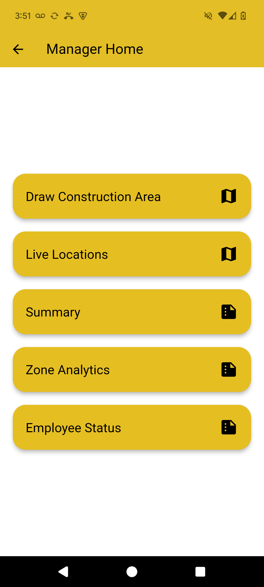
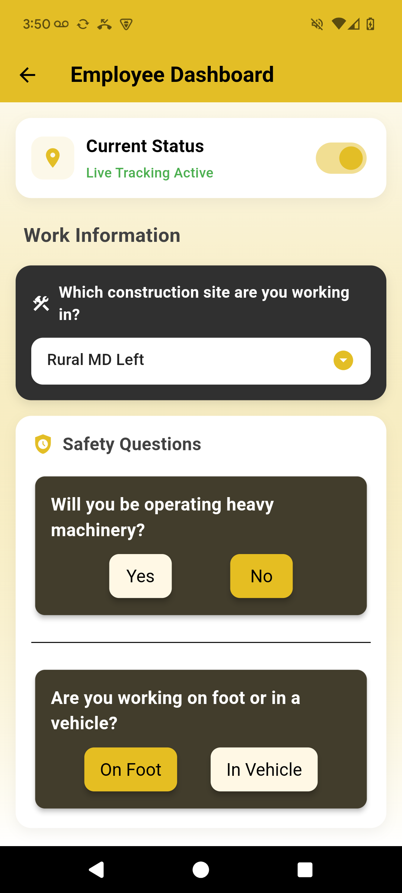
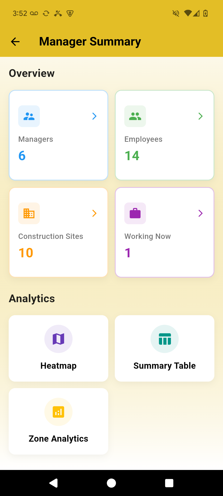
智慧工区安全平台Smart Work-Zone Safety Platform
把工人端的情境输入、实时定位与管理端的工区划定、风险可视化和事件复盘连接成一条双角色流程。Connecting worker context and location with manager-side work-zone definition, risk visualization, and incident review.
角色与边界Role & boundary
产品经理兼交互设计负责人；主导需求定义、交互模型、利益相关者协调与 MVP 规划，工程实现由团队协作完成。Product Manager & Interaction Design Lead; led requirements, interaction model, stakeholder coordination, and MVP planning while engineering was delivered collaboratively.
精选项目Selected公开重绘 · 小群体服务Public reconstruction · small-group service
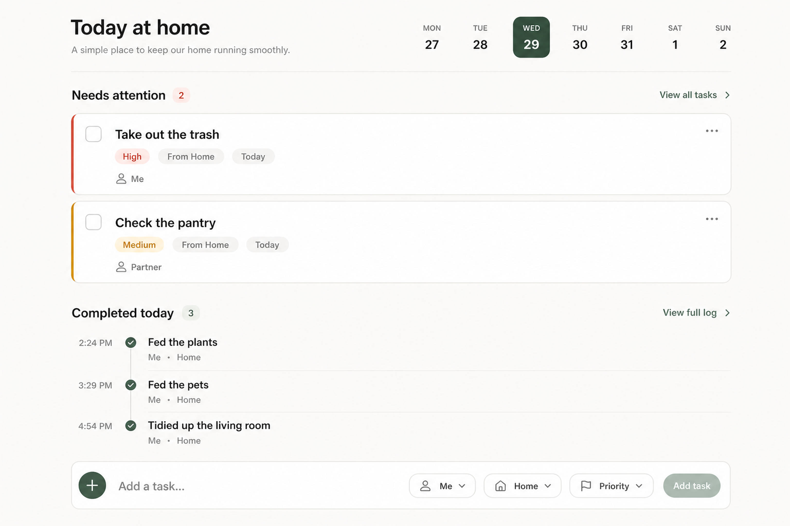
家庭任务与照料协作Household Tasks & Care Coordination
把今天谁需要做什么、谁正在负责、什么已经完成，放进一个安静的家庭共用界面里。A calm shared view of what needs attention today, who is responsible, and what has already been completed.
设计重点Design focus
界面强调异常优先、低提醒密度和责任连续性；首图依据现有原型高清重绘，真实使用叙事仍需参与者同意后公开。The interface prioritizes exceptions, low notification density, and continuity of responsibility. The lead visual is an HD reconstruction grounded in the existing prototype; real-use narratives still require participant consent.
工作流工具Workflow tool历史原型 · 高清重绘Historical prototype · HD reconstruction
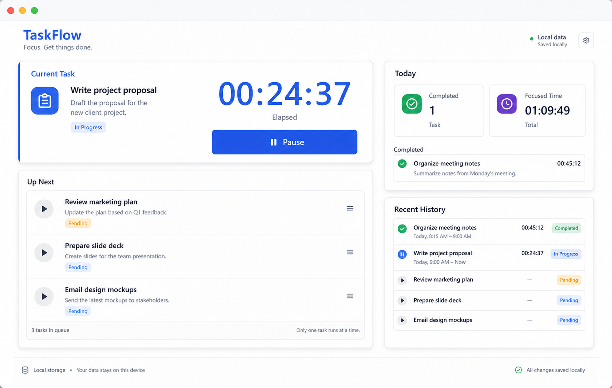
TaskFlow · 工作流与时长记录TaskFlow · Workflow & Time Tracking
把任务队列、当前工作、持续时长和完成历史放进同一条流程，让时间记录服务于工作推进，而不是成为额外负担。Combining the task queue, current work, elapsed time, and completion history so time tracking supports the workflow instead of interrupting it.
为什么保留Why it matters
这是一个边界清楚的独立小产品，不与后来的注意力方法实验混为一谈。A bounded standalone product, distinct from the later attention-method experiments.
工作流工具Workflow tool方法探索 · 高清重绘Design inquiry · HD reconstruction
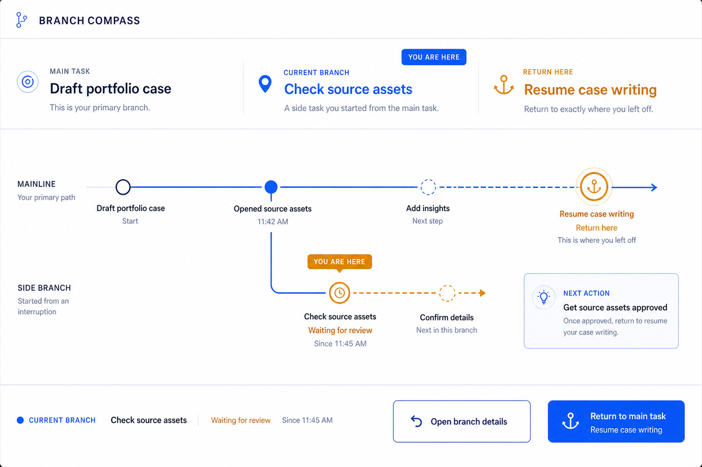
中断恢复工作流Interruption Recovery Workflow
保留主任务、临时分支和准确的返回位置，帮助人在被打断后快速恢复工作流，减少重新理解上下文的时间。Preserving the main task, temporary branch, and exact return point so people can resume a workflow without rebuilding its context.
当前结论Current learning
不同工具能缓解不同断裂点，但目前没有一个方法能胜任所有工作连续性问题。Different tools relieve different breaks in continuity; no single method currently handles the full problem.
工作流工具Workflow tool严格本地概念试点Strict-local concept pilot
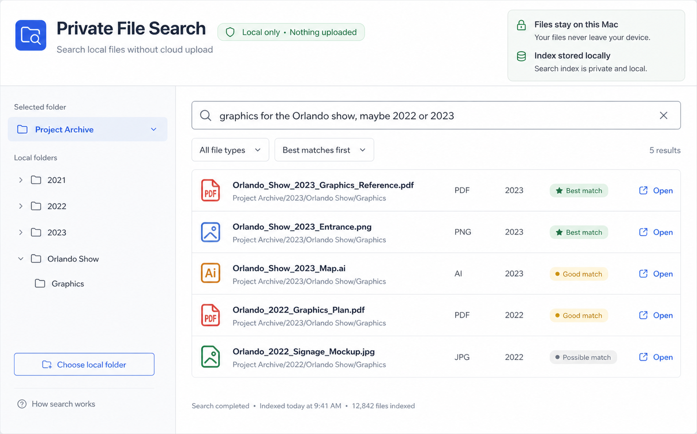
本地优先文件检索工作流Local-First File Retrieval Workflow
把自然语言检索嵌入现有文件工作流；无需迁移资料，索引和结果留在本机，敏感内容不上传云端。Adding natural-language retrieval to the existing file workflow without migration, while keeping the index, results, and sensitive content on the computer.
证据边界Evidence boundary
本地优先边界、检索交互与评估协议已有；真实文件夹试点和目标机器验证仍待完成。The local-first boundary, retrieval interaction, and evaluation protocol exist; real-folder pilot and target-machine validation remain pending.
Handy · 不离开当前任务的语音输入Handy · Voice Input Without Leaving the Task
按一次键开始说话，本地转录后按语义做保守整理，再把文字送回正在使用的应用；原文和整理版都保留。One key starts capture; local transcription is conservatively organized and returned to the active app, while both the raw and organized versions remain available.
角色与边界Role & boundary
我定义并验证了快捷键、模型选择、保守结构化、失败时回原文和回到当前光标的工作流，并制作 HandyBar 配置工具；底层桌面应用与本地转录框架来自开源 Handy。音频留在本机，启用结构化时文本会发送给所配置的语言模型。I defined and tested the shortcut, model choice, conservative organization, raw-text fallback, and return-to-cursor workflow, and built the HandyBar configuration utility. The desktop app and local transcription foundation come from open-source Handy. Audio stays on-device; when organization is enabled, transcript text is sent to the configured language model.
概念选辑Selected concept合成角色 · 概念原型Synthetic personas · concept prototype
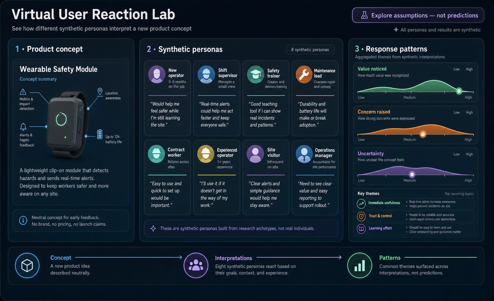
产品假设观察站Product Assumption Observatory
把团队对用户反应的默认想象放进不同生活情境，比较同一项变化如何被重新理解，以及这些理解会带来什么后续选择。Placing a team's assumptions about user response into different life contexts to compare how the same change is reinterpreted and what choices may follow.
查看现有案例Open current case
概念、产品模型与信息可视化；所有人物、事件与结果均为合成内容。Concept, product model, and information visualization; all people, events, and outcomes are synthetic.
给皮肤设计一套不用学的警示语言A warning language for the skin, with nothing to learn
视觉被占满、环境嘈杂时，信息该走哪个通道？我在头部与躯干上搭建分布式触觉阵列，把“这个提醒够不够明显”转化为个体化感知阈值、反应延迟与辨识准确率等可测问题。量化结果将在样本与来源核验后公开。When vision is saturated and the environment is loud, which channel should information take? I built a distributed haptic array across the head and torso and translated “is this alert noticeable enough?” into measurable questions of individual thresholds, response latency, and identification accuracy. Quantitative results will be published after sample and source verification.
为什么这跟灯效、声音、表情是同一个问题：它们都是给一个带宽有限的通道设计一套信号词汇表，要让用户不用学就懂，还不能用久了疲劳。触觉是其中最难的通道 —— 分辨率最低、个体差异最大。方法往灯效和声音上迁移，是降维。Why this is the same problem as light, sound, and facial expression: each is a vocabulary designed for a bandwidth-limited channel, which users must grasp without instruction and must not tune out over time. Haptics is the hardest of them, with the lowest resolution and the widest individual variation. Porting the method to light and sound is a step down in difficulty, not up.
信号词汇表 — 点开任意一条看设计理由
The signal vocabulary — tap any row for the design rationale
四类信号的时序规范图 —— 参数直接来自实验平台的信号规格文档Timing specification for the four signal classes, drawn from the platform's signal spec单次试次流程图：预警分支、双时间戳、IMU 并行记录Per-trial flow: pre-warning branch, dual timestamps, parallel IMU capture
两种载体，同一套方向语言Two carriers, one directional grammar
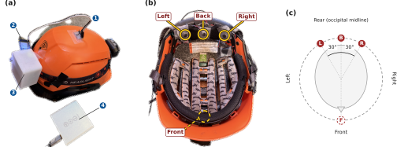
智能头盔触觉阵列：外部集成 IMU、ESP32、控制盒与电源；内部以前、后、左、右四个触点表达方位。右侧方向图把硬件布局和佩戴者的空间参照对应起来。Smart-helmet haptic array: an external IMU, ESP32, control enclosure, and power source support four internal tactors for front, back, left, and right. The orientation diagram maps the hardware layout to the wearer’s spatial frame of reference.
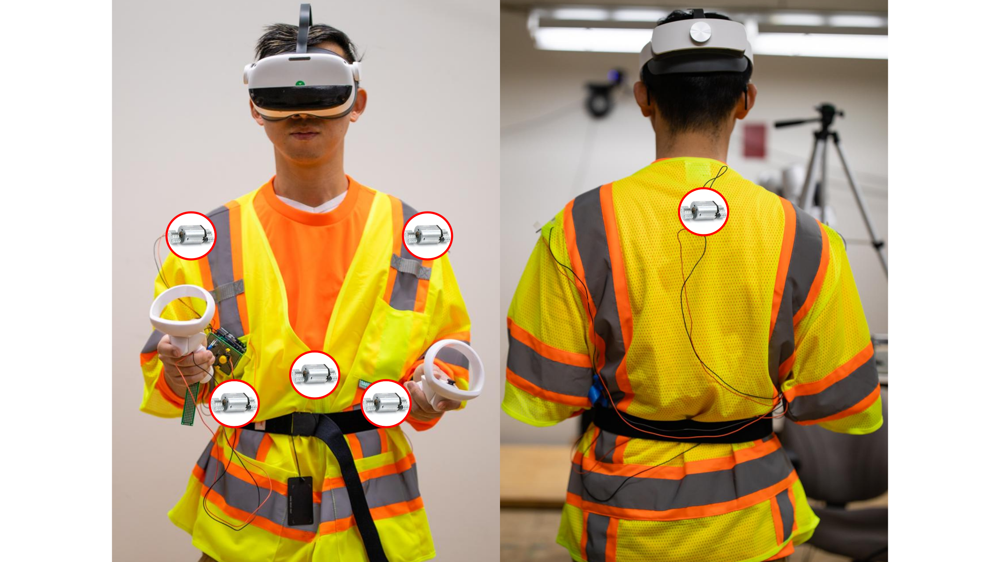
智能背心触觉阵列：正面触点分布在双肩与躯干，背面触点位于上背部；可穿戴载体把方位提示从头部扩展到身体。Smart-vest haptic array: front tactors are distributed across the shoulders and torso, with an upper-back tactor on the rear. The wearable carrier extends directional cues from the head to the body.
一刀切的阈值会伤害两端的人。同一强度的振动，对一部分人根本感知不到，对另一部分人是持续骚扰。所以我的博士论文主题是适配：以“相对个体自身基线的偏差”定义指标，让信号适配人，而不是让人适应信号 —— 而且这个适配过程要可见、可控、可撤销。One threshold for everyone hurts both ends of the distribution. The same vibration intensity is imperceptible to some people and a constant nuisance to others. My dissertation is therefore about adaptation: define the metric as deviation from each person's own baseline, so the signal fits the person rather than the reverse. And that adaptation must stay visible, controllable, and reversible.
我编写的 Python 实验控制台：把硬件连接、试次进度、方向与信号映射、反应时、已完成试次、运动轨迹和 IMU 实时姿态收进同一界面。本图依据一次真实运行界面高清重绘；参与者与 session 标识已替换为演示值。My Python experiment console brings hardware connectivity, trial progress, direction and signal mapping, reaction time, completed trials, position trajectory, and live IMU orientation into one surface. This high-definition reconstruction is grounded in a real run, with participant and session identifiers replaced by demo values.
案例 02 · 产品经理兼交互设计负责人 · 匿名产业合作
CASE 02 · Product Manager & Interaction Design Lead · Anonymized industry collaboration
智慧工区安全平台Smart Work-Zone Safety Platform
面向施工现场的双角色安全工作流：工人端提供实时定位与作业情境，管理端划定工区、查看风险分布并复盘事件。我主导需求定义、交互模型、利益相关者协调与 MVP 规划；工程实现由跨学科团队协作完成。A two-sided safety workflow for construction sites: workers provide location and task context while managers define work zones, inspect risk patterns, and review events. I led requirements, interaction modeling, stakeholder coordination, and MVP planning; engineering was delivered collaboratively by a cross-disciplinary team.
单一阈值全场通用 —— 距离一到就报，不分作业类型与噪声环境。One threshold everywhere. Fire on proximity alone, regardless of task type or ambient noise.
所有等级用同一种表达 —— 灯光加蜂鸣，紧急和例行长得一模一样。Every severity looks identical. Light plus buzzer, whether it is an emergency or a routine notice.
误报没有代价 —— 系统不知道自己错了，也没人反馈。False alarms cost nothing. The system never learns it was wrong, and no one tells it.
设计风险：如果例行信息和紧急风险使用同样强度，系统会持续消耗人的注意力与信任。Design risk: when routine information and critical hazards use the same intensity, the system continually spends human attention and trust.
分级 + 场景化阈值 —— 按作业类型与环境噪声动态调整触发条件。Tiered, context-aware thresholds. Trigger conditions adapt to task type and ambient noise.
通道按紧急度分配 —— 紧急：多模态齐上；次要：单通道；例行：静默入日志，不打断人。Channels allocated by urgency. Critical: all modalities. Secondary: one channel. Routine: silent logging that never interrupts.
误报进入回路 —— 工人一键标记误报，阈值按真实反馈校准。False alarms enter the loop. Workers flag them in one tap, and thresholds recalibrate on real feedback.
设计方向：让提醒强度匹配风险，把误报反馈重新送回阈值与产品决策。Design direction: match interruption intensity to risk and return false-alarm feedback to threshold and product decisions.
核心产品判断：安全界面不能只问“能否发出提示”，还要问每一次打断是否值得。阈值、表达通道、误报反馈与事后复盘必须属于同一条产品回路。Core product judgment: a safety interface cannot ask only whether it can issue an alert; it must ask whether each interruption is worth making. Thresholds, expression channels, false-alarm feedback, and incident review belong in one product loop.
真实原型界面 — 两种角色，一条安全工作流
Original prototype UI — two roles, one safety workflow
工人端：先记录当天的作业方式与情境Worker: capture today's work mode and context first安全经理端：进入工区、人员与风险管理入口Safety manager: enter work-zone, people, and risk controls管理看板：汇总区域、工人和近期告警Dashboard: summarize zones, workers, and recent alerts
界面来自项目原始原型；公开版本已移除客户品牌与可识别信息。项目经历在简历中可注明 Allan Myers。These screens come from the original prototype. Client branding and identifying details are removed here; the résumé may name Allan Myers.
不是替我跳到答案，而是帮我找到下一步See the edge of what you know, then explore outward from it.
我持续构建并使用一套个人 AI 系统。它先帮我梳理已经掌握的内容，指出还有哪些地方没有想清楚，再找到一个我能够理解和验证的下一步。不同角色、记忆与行为规则，都是为了让探索保持连续：不替我越过思考过程，也允许我随时纠正或退回。I continue to build and use a personal AI system not to make bigger leaps for me, but to organize what I already know, surface what I do not yet understand, and find the next step near that boundary. Its roles, memory, and behavior contracts support this gradual path: each step remains understandable, testable, and open to correction or reversal.
Seven agents — hover for each one's behavioral boundary
为什么行为规则要用自然语言写：因为写下来的东西才能被审、被吵、被改。人格藏在代码里，讨论就只能发生在工程师之间；写成契约，产品、设计、算法可以指着同一句话吵架 —— 这正是交互设计文档该起的作用。Why behavior rules are written in natural language: only what is written down can be reviewed, argued over, and changed. Character buried in code confines the discussion to engineers. As a contract, product, design, and algorithm can argue over the same sentence, which is exactly what an interaction design document is for.
公开面与私人运行面严格分开。作品集只展示可公开的架构与合成数据交互，不公开个人 backlog、邮件或私有运行状态。这里讨论的是 n=1 使用中形成的设计方法，不暗示规模化采用。The public surface and private runtime stay separate. This portfolio shows only public-safe architecture and synthetic interactions—not personal backlogs, email, or private runtime state. It presents methods formed through n=1 use and does not imply scaled adoption.
# strategist / instruction.yaml — 行为边界节选behavioral boundary, excerptjudgment:boundaries:
- 建议，绝不代为决定suggests, never commands
- 检测到沉默期时不主动发起对话stays silent during detected quiet periods
- 不确定时说出不确定，而不是补一个像样的答案states uncertainty instead of manufacturing a plausible answer
角色系统：六个手绘 SVG 头像，直接取自生产环境的渲染器。一个智能体一种动物，让身份在读到名字之前就先被认出来The character system: six hand-authored SVG avatars, lifted straight from the production renderer. One animal per agent, so identity registers before a single label is read.
案例 04 · 概念探索 · 公开项目
CASE 04 · Concept exploration · Open project
同一项变化，为什么会被不同的人理解成不同的事？Why does the same change become something different to each person?
这是一个用合成人物外化产品假设的观察工具：把同一项新功能、规则或事件放进不同生活情境，比较人们如何根据自身需要重新理解它，以及这些理解如何改变后续选择与关系。它不是预测模型，而是一种在上线前发现盲点、讨论分歧的设计方法。An observatory for externalizing product assumptions through synthetic people. It places the same feature, rule, or event into different life contexts, then compares how people reinterpret it through their own needs and how those interpretations may shape later choices and relationships. It is not a prediction model; it is a design method for finding blind spots and debating differences before launch.
总览模式：左栏事件流与人物卡，中央沙盘，右栏语义重分类与扩散指标，底部为昼夜时间轴Overview: event stream and character cards at left, the sandbox at center, semantic reclassification and diffusion metrics at right, a day–night timeline below
核心设计判断：这里被观察的不是“数字人有多像真人”，而是团队对用户的默认想象。把这些想象放进多个情境和后果链里，谁把它当工具、谁感到被约束、谁暂缓接受，才会变成可见、可讨论、可修改的设计问题。Core design judgment: the subject is not how convincingly synthetic people imitate real people, but the team's default assumptions about users. Placing those assumptions across contexts and consequence chains makes it possible to see, debate, and revise who treats a change as a tool, who feels constrained by it, and who delays adoption.
状态联动：切换个体与时相后，全屏所有面板同步重写Interlocked state: switching individual and phase rewrites every panel at once概念帧（预渲染）—— 与实跑交互层区分标注Concept frame (pre-rendered), labelled distinctly from the live interaction layer
选辑 · 交互系统设计
Selected work · Interaction system design
让复杂系统保持可理解、可控、可恢复Keeping complex systems understandable, controllable, and recoverable
我把复杂机制转化成用户能感知的反馈：看得见系统状态，知道信息何时交换，也能在能力受限时继续完成核心任务。I translate complex system behavior into feedback people can understand: visible state, deliberate information exchange, and a core task that survives reduced capability.
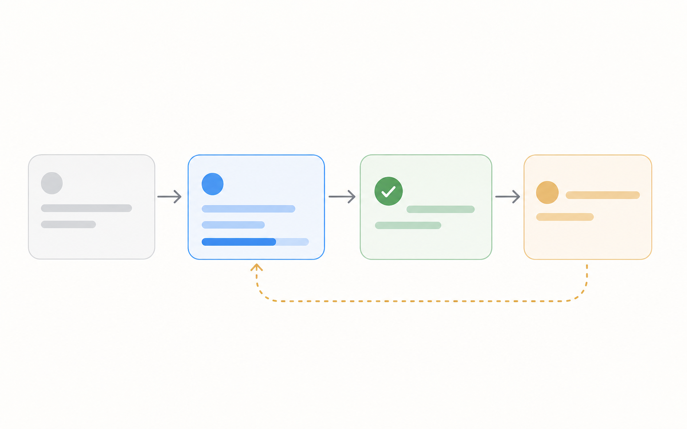
理解状态：用持续、明确的反馈，让用户知道系统正在做什么，以及下一步会发生什么。Understand the state: continuous, explicit feedback shows what the system is doing and what happens next.
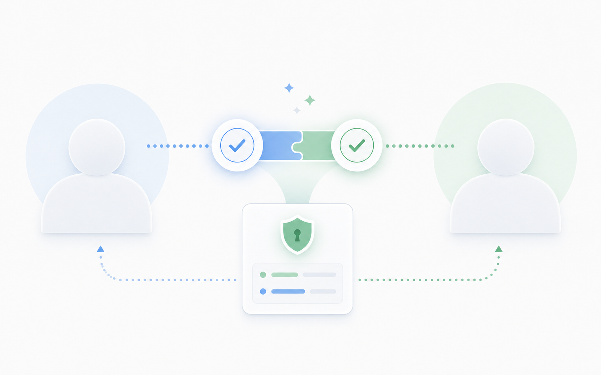
控制交换：让敏感信息只在明确确认后出现，避免系统替用户做决定。Control the exchange: sensitive information appears only after explicit confirmation, so the system never decides on the user's behalf.
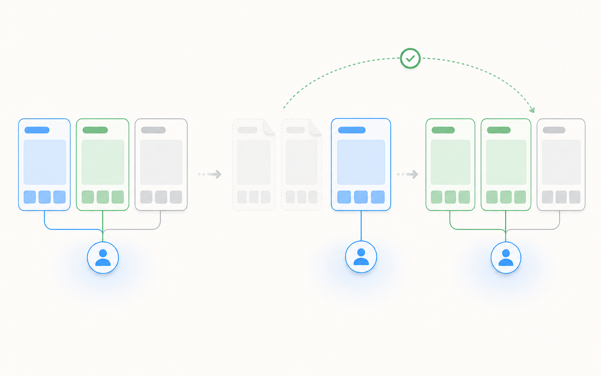
保持连续：能力受限时保留核心任务；条件恢复后，再自然接回完整体验。Maintain continuity: preserve the core task under reduced capability, then restore the full experience when conditions recover.